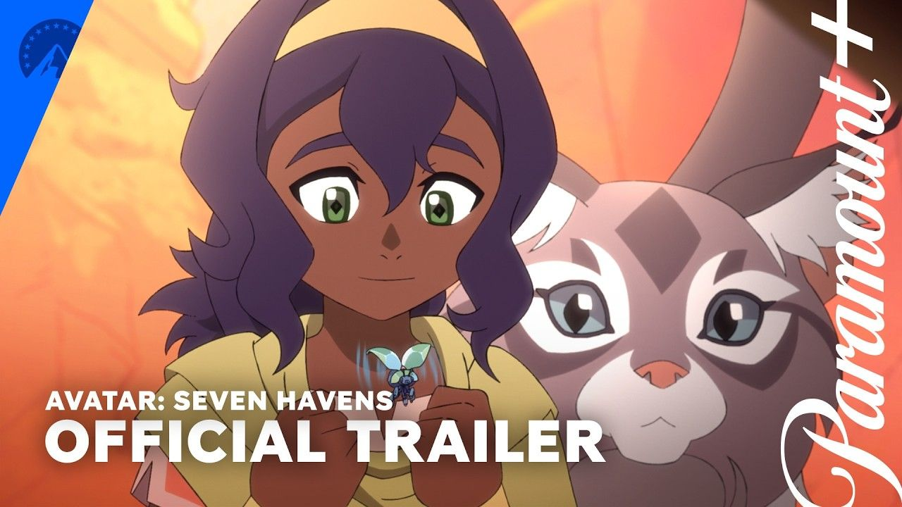

Avatar: Seven Havens Trailer
Avatar Universe में एक बार फिर बड़ा बदलाव देखने को मिल रहा है। Paramount+ ने Avatar: Seven Havens का Official Trailer 10 September 2026 को रिलीज कर दिया है। यह The Legend of Korra के बाद Avatar Universe की अगली बड़ी कहानी है और इस बार कहानी एक ऐसी दुनिया में पहुंच चुकी है जहां Avatar का नाम उम्मीद से ज्यादा डर और विनाश से जोड़ा जाता है।
━━━━━━━━━━━━━━━━━━━━
𝗡𝗮𝘆𝗶 𝗔𝘃𝗮𝘁𝗮𝗿 𝗣𝗮𝘃𝗶 𝗸𝗮𝘂𝗻 𝗵𝗮𝗶?
━━━━━━━━━━━━━━━━━━━━
Avatar: Seven Havens की कहानी Pavi नाम की एक young Earthbender के इर्द-गिर्द घूमती है। Pavi को पता चलता है कि वह Korra के बाद अगली Avatar है।
लेकिन यहां सबसे बड़ा twist यही है कि Pavi के समय में Avatar को इंसानियत का Savior नहीं माना जाता। इस दुनिया में लोगों का मानना है कि Avatar ही humanity के विनाश का कारण है।
Pavi के लिए Avatar बनना किसी सम्मान से कम और एक खतरनाक पहचान ज्यादा बन जाता है।
━━━━━━━━━━━━━━━━━━━━
𝗞𝗼𝗿𝗿𝗮 𝗸𝗲 𝗯𝗮𝗮𝗱 𝗱𝘂𝗻𝗶𝘆𝗮 𝗶𝘁𝗻𝗶 𝗯𝗮𝗱𝗮𝗹 𝗸𝘆𝗼𝗻 𝗴𝗮𝘆𝗶?
━━━━━━━━━━━━━━━━━━━━
Seven Havens की कहानी The Legend of Korra के बाद की Avatar cycle को follow करती है। यह एक ऐसी दुनिया में सेट है जो एक devastating cataclysm के बाद बुरी तरह बदल चुकी है।
Civilization के बचे हुए मजबूत ठिकानों को Seven Havens कहा जाता है। इन्हीं आखिरी safe havens को बचाना Pavi की सबसे बड़ी जिम्मेदारी बन जाती है।
Trailer सबसे बड़ा सवाल यही खड़ा करता है कि आखिर ऐसा क्या हुआ जिसके बाद Avatar को humanity के protector के बजाय destroyer माना जाने लगा।
━━━━━━━━━━━━━━━━━━━━
𝗞𝘆𝗮 𝗞𝗼𝗿𝗿𝗮 𝗸𝗼 𝗱𝘂𝗻𝗶𝘆𝗮 𝗣𝗮𝘃𝗶 𝗸𝗶 𝗱𝘂𝘀𝗵𝗺𝗮𝗻 𝗺𝗮𝗻𝘁𝗶 𝗵𝗮𝗶?
━━━━━━━━━━━━━━━━━━━━
Trailer में Korra की भी झलक देखने को मिलती है। कहानी में यह सवाल बना हुआ है कि Korra के समय में ऐसा क्या हुआ जिसके बाद Avatar को humanity के लिए खतरा माना जाने लगा।
अभी official story ने इस mystery का पूरा जवाब नहीं दिया है। इसलिए Korra को villain मानना सही नहीं होगा। फिलहाल इतना साफ है कि नई दुनिया Avatar को destruction से जोड़ती है।
━━━━━━━━━━━━━━━━━━━━
𝗣𝗮𝘃𝗶 𝗸𝗲 𝘀𝗮𝗮𝘁𝗵 𝘂𝘀𝗸𝗶 𝗧𝘄𝗶𝗻 𝗦𝗶𝘀𝘁𝗲𝗿 𝗡𝗶𝘀𝗵𝗮 𝗸𝘆𝗼𝗻 𝗵𝗮𝗶?
━━━━━━━━━━━━━━━━━━━━
Pavi की journey में उसकी long-lost twin sister Nisha भी बेहद important role निभाती है।
Pavi और Nisha को अपने mysterious origins के बारे में सच्चाई पता करनी है। दोनों को इंसानों के साथ-साथ spirit enemies से भी खतरा है।
Trailer में दोनों बहनों के बीच का relationship कहानी का emotional हिस्सा दिखाई देता है। यह mystery भी काफी interesting है कि उनके अतीत का Avatar cycle से क्या connection है।
━━━━━━━━━━━━━━━━━━━━
𝗔𝘃𝗮𝘁𝗮𝗿: 𝗦𝗲𝘃𝗲𝗻 𝗛𝗮𝘃𝗲𝗻𝘀 𝗺𝗲𝗶𝗻 𝗸𝗮𝘂𝗻-𝗸𝗮𝘂𝗻 𝗵𝗮𝗶?
━━━━━━━━━━━━━━━━━━━━
Saheli Khan — Pavi
Aishu Devan — Nisha
Akshay Khanna — Karthik
Major Curda — Jae
Sakina Jaffrey — Agam
Darren Barnet — Daemin
Dianne Doan — Zi
Dee Bradley Baker — Geet और Ruhi
━━━━━━━━━━━━━━━━━━━━
𝗔𝘃𝗮𝘁𝗮𝗿: 𝗦𝗲𝘃𝗲𝗻 𝗛𝗮𝘃𝗲𝗻𝘀 𝗸𝗲 𝗖𝗿𝗲𝗮𝘁𝗼𝗿𝘀 𝗸𝗮𝘂𝗻 𝗵𝗮𝗶𝗻?
━━━━━━━━━━━━━━━━━━━━
इस नई animated series को Avatar: The Last Airbender के original creators Michael Dante DiMartino और Bryan Konietzko ने बनाया है।
दोनों इस series में co-creators और executive producers के तौर पर जुड़े हुए हैं।
Ethan Spaulding executive producer और Sehaj Sethi co-executive producer हैं। Series को Avatar Studios और Nickelodeon Animation Studios produce कर रहे हैं।
━━━━━━━━━━━━━━━━━━━━
𝗔𝘃𝗮𝘁𝗮𝗿: 𝗦𝗲𝘃𝗲𝗻 𝗛𝗮𝘃𝗲𝗻𝘀 𝗸𝗮𝗯 𝗥𝗲𝗹𝗲𝗮𝘀𝗲 𝗵𝗼𝗴𝗶?
━━━━━━━━━━━━━━━━━━━━
Avatar: Seven Havens का global premiere 9 October 2026 को Paramount+ पर होगा।
Book 1 के पहले तीन episodes 9 October को रिलीज होंगे।
Episodes 4 से 6 — 16 October 2026
Episodes 7 से 9 — 23 October 2026
Episodes 10 से 13 — 30 October 2026
Book 2 की release details बाद में announce की जाएंगी।
━━━━━━━━━━━━━━━━━━━━
𝗧𝗿𝗮𝗶𝗹𝗲𝗿 𝗺𝗲𝗶𝗻 𝘀𝗮𝗯𝘀𝗲 𝗯𝗮𝗱𝗮 𝗯𝗱𝗹𝗮𝘃 𝗸𝘆𝗮 𝗱𝗶𝗸𝗵𝗮𝗶 𝗱𝗲𝘁𝗮 𝗵𝗮𝗶?
━━━━━━━━━━━━━━━━━━━━
Avatar Universe में पहले Avatar को balance बनाए रखने वाली ताकत के रूप में देखा जाता था। लेकिन Seven Havens में situation पूरी तरह उलट गई है।
Pavi को खुद को बचाते हुए यह साबित करना होगा कि Avatar वास्तव में humanity का दुश्मन नहीं है।
Trailer में Pavi की bending abilities, spirit world, destroyed civilization और उसके आसपास मौजूद खतरों की झलक देखने को मिलती है।
सबसे interesting बात यह है कि Pavi सिर्फ एक नई Avatar नहीं है। उसे उस पूरी दुनिया की सोच बदलनी है जो Avatar को ही destruction से जोड़ती है।
━━━━━━━━━━━━━━━━━━━━

𝗞𝘆𝗮 𝗔𝘃𝗮𝘁𝗮𝗿: 𝗦𝗲𝘃𝗲𝗻 𝗛𝗮𝘃𝗲𝗻𝘀 𝗧𝗵𝗲 𝗟𝗲𝗴𝗲𝗻𝗱 𝗼𝗳 𝗞𝗼𝗿𝗿𝗮 𝘀𝗲 𝗷𝘂𝗱𝗶 𝗵𝗮𝗶?
━━━━━━━━━━━━━━━━━━━━
हां। Seven Havens उसी Avatar continuity का अगला chapter है और कहानी Korra के बाद की Avatar cycle को follow करती है।
Korra के बाद Pavi नई Avatar बनती है और एक completely changed world में अपना सफर शुरू करती है।
यही connection पुराने Avatar fans के लिए इस series को और ज्यादा important बनाता है।
━━━━━━━━━━━━━━━━━━━━
𝗔𝘃𝗮𝘁𝗮𝗿: 𝗦𝗲𝘃𝗲𝗻 𝗛𝗮𝘃𝗲𝗻𝘀 𝗧𝗿𝗮𝗶𝗹𝗲𝗿 𝗺𝗲𝗶𝗻 𝗸𝘆𝗮 𝗸𝗵𝗮𝗮𝘀 𝗵𝗮𝗶?
━━━━━━━━━━━━━━━━━━━━
सबसे बड़ा attraction इसकी नई कहानी है। इस बार सवाल सिर्फ यह नहीं है कि Avatar दुनिया को कैसे बचाएगा।
सवाल यह है कि जब पूरी दुनिया ही Avatar को अपना दुश्मन समझती हो, तब Avatar दुनिया को बचाएगा कैसे?
Pavi का character इसी conflict के बीच सामने आता है।
नई civilization, spirits, bending action, Pavi और Nisha की mystery और Korra से जुड़ा बड़ा सवाल Seven Havens को Avatar Universe का एक अलग और darker chapter बना रहा है।
━━━━━━━━━━━━━━━━━━━━
𝗕𝗼𝘁𝘁𝗼𝗺 𝗟𝗶𝗻𝗲
━━━━━━━━━━━━━━━━━━━━
Avatar: Seven Havens का Official Trailer यह साफ कर देता है कि Avatar Universe की अगली कहानी सिर्फ एक नई Avatar की शुरुआत नहीं है।
यह एक ऐसी दुनिया की कहानी है जहां Avatar को बचाने वाला नहीं बल्कि destruction का कारण माना जाता है।
Pavi को अपने अतीत, अपनी twin sister Nisha और Korra से जुड़े रहस्य को समझते हुए Seven Havens को बचाना होगा।
Avatar: Seven Havens 9 October 2026 से Paramount+ पर शुरू होगी और Book 1 के 13 episodes चार weekly batches में रिलीज किए जाएंगे।